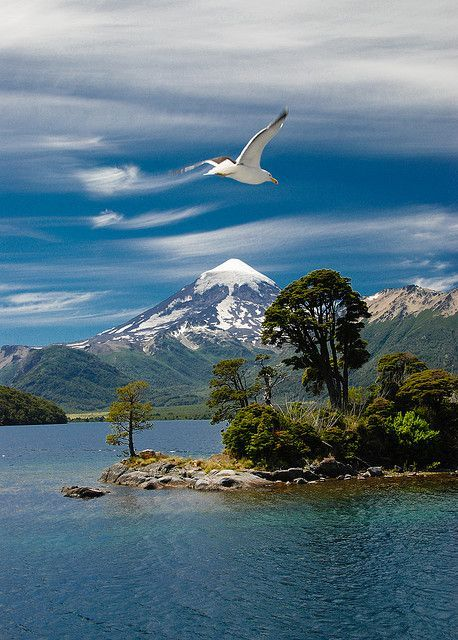
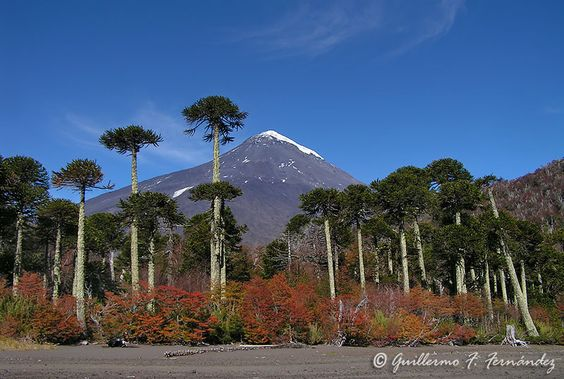
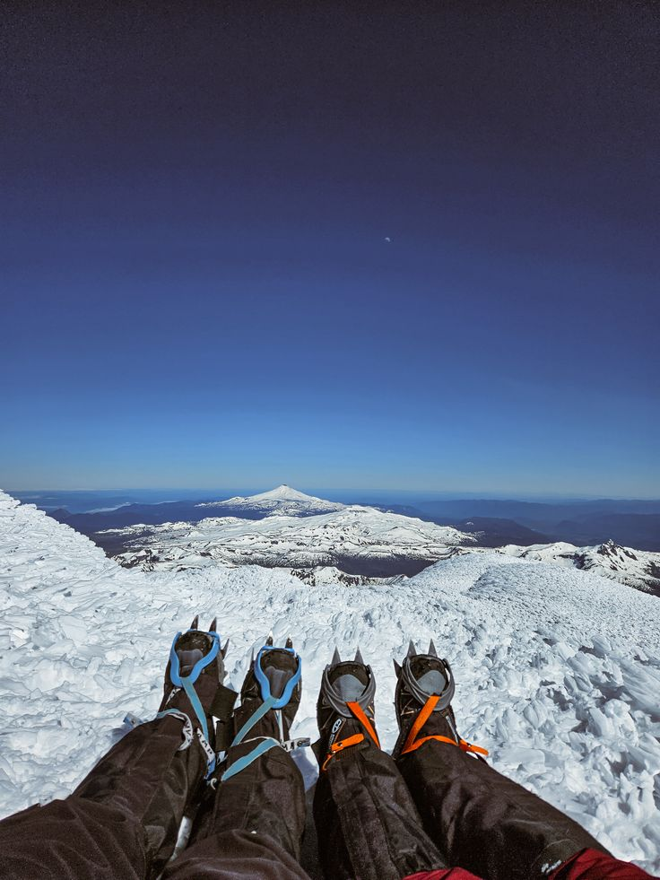

Un desafío que une.
Somos una red de organizaciones de la sociedad civil que comparten la visión de un mar sano y diverso.
En el Mar Patagónico coexisten múltiples jurisdicciones, pero los procesos oceanográficos y ecológicos conectan regiones distantes y sostienen vida por fuera de las fronteras políticas. Frente a la escala del desafío, resulta imprescindible impulsar esfuerzos mancomunados entre países, pueblos, organizaciones, sectores privados y científicos.Conocé los límites, infraestructura, caminos, excursiones y senderos habilitados para uso público en este mapa interactivo.


Un desafío que une.
Somos una red de organizaciones de la sociedad civil que comparten la visión de un mar sano y diverso.
En el Mar Patagónico coexisten múltiples jurisdicciones, pero los procesos oceanográficos y ecológicos conectan regiones distantes y sostienen vida por fuera de las fronteras políticas. Frente a la escala del desafío, resulta imprescindible impulsar esfuerzos mancomunados entre países, pueblos, organizaciones, sectores privados y científicos.Conocé los límites, infraestructura, caminos, excursiones y senderos habilitados para uso público en este mapa interactivo.Sumergite en la biodiversidad de la provincia, conociendo sus especies, genes y ecosistema.
Un desafío que une.
Somos una red de organizaciones de la sociedad civil que comparten la visión de un mar sano y diverso.
Seguí las novedades del Parque Nacional Lanín.En el Mar Patagónico coexisten múltiples jurisdicciones, pero los procesos oceanográficos y ecológicos conectan regiones distantes y sostienen vida por fuera de las fronteras políticas. Frente a la escala del desafío, resulta imprescindible impulsar esfuerzos mancomunados entre países, pueblos, organizaciones, sectores privados y científicos.Conocé los límites, infraestructura, caminos, excursiones y senderos habilitados para uso público en este mapa interactivo.
